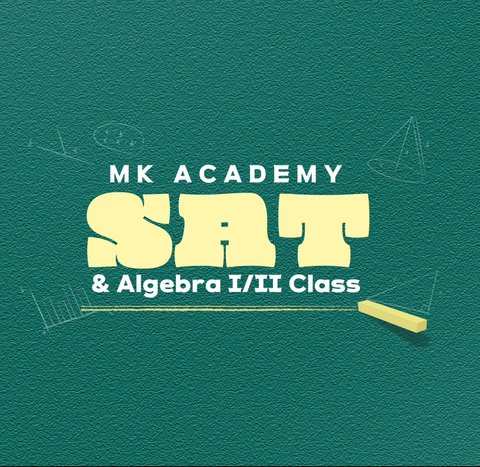

Experience
📈
At MK Academy, one SAT cohort's average Math score rose from 633.2 to 734.4.
Participant, RoboJackets
- Part of the Mini Rover Challenge, where four teams build on pre-made hardware, choose electrical components together, and control the rover over Bluetooth with Arduino code.
- Drew the rover's electrical diagram: battery, fuse box, two buck converters, Arduino Uno, two L298N motor drivers, four DC motors, and two servos.
- Soldered the wiring. Now moving to the Arduino software.
Engineering Intern, TPOINT
- Supported installation and commissioning of automotive manufacturing systems with FANUC robots and LS ELECTRIC PLC hardware, including robot zero-position setup, labeling, and network configuration.
- Assembled and wired industrial control panels with relays, power supplies, terminal blocks, contactors, and 220 VAC robot power.
- Configured and tested a KEYENCE vision system that verifies component presence.
- Built the frame and wired the control panel for a temperature-triggered AMR charging safety system, alongside a controls engineer.
Propulsion Team Member, Design/Build/Fly
- Ran thrust-stand tests on three APC propellers with the team's final motor and battery, recording thrust, torque, RPM, and current.
- Ran dynamic thrust tests at 45, 55, and 65 mph with the stand mounted on a car roof, averaging runs in both directions to correct for headwind.
- Built an Excel comparison tool to support propeller selection.
Digital SAT Math Instructor and Curriculum Developer, MK Academy

- Developed and taught SAT Math and Algebra curricula to 50+ students.
- Created 25+ practice exams and 5 workbooks. One cohort's average SAT Math score rose from 633.2 to 734.4.
Independent STEM Tutor
- Teach AP Physics, AP Calculus, SAT Math, and secondary math to 20+ students.
- Led AP Calculus AB and AP Physics I groups where 13 of 14 students earned a 4 or 5.